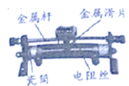
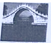
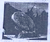
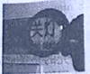
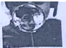
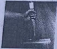
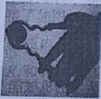
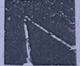
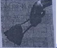
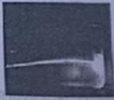

2020年北京市中考物理试题 · 选择题 第1、2、3、4、5题
1.如图所示的滑动变阻器上标记的各部件中，通常情况下，属于绝缘体的是（ ）

A. 金属杆B. 瓷筒C. 电阻丝D. 金属滑片
2.如图所示的光现象中由于光的反射形成的是（ ）
A.

桥在水中形成的倒影B.

日晷上呈现针的影子C.

透过放大镜看到放大的字D.

人透过水球所成的像3.如图所示，正在使用的四种工具，属于费力杠杆的是（ ）
A.

羊角锤B.

核桃夹C.

园艺剪D.

食品夹4.为了观察光 直线传播，将一束单色光从玻璃槽的外侧由左侧倾斜向上射入盐水中，但光在盐水中并不是沿着直线传播，而是发生了弯曲，如图所示。这是由于（ ）
直线传播，将一束单色光从玻璃槽的外侧由左侧倾斜向上射入盐水中，但光在盐水中并不是沿着直线传播，而是发生了弯曲，如图所示。这是由于（ ）

A. 光从空气到玻璃发生了折射
B. 盐水不均匀使光发生了弯曲
C. 光发生了色散
D. 光从玻璃到盐水发生了折射
5.隆冬，滴水成冰的过程中，发生的物态变化是（ ）
A. 熔化B. 凝固C. 液化D. 升华